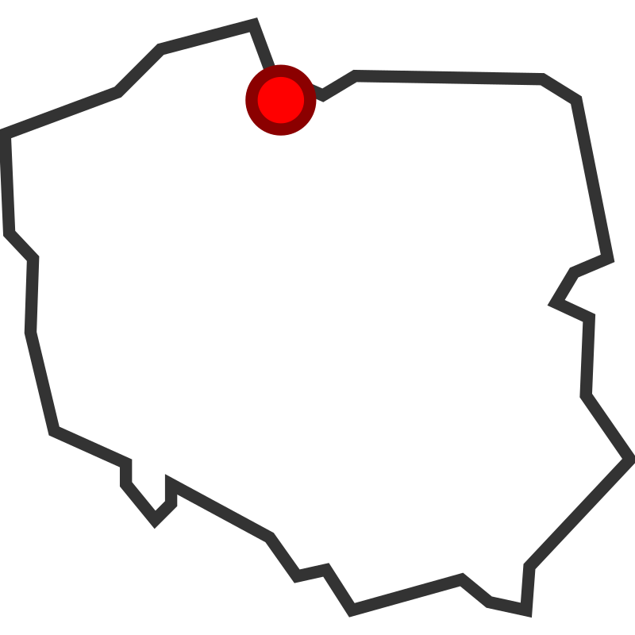
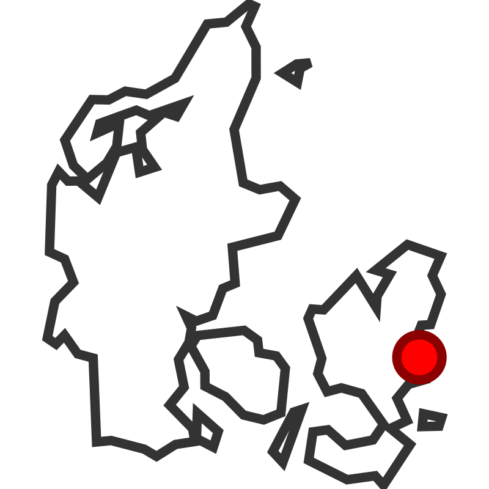

Education
Automation and Robotics - Technical University of Gdańsk 
Graduated: [January, 2023]
Skills gained:
- Programming: C, C++, Python, Matlab, C#, SQL basics
- Web design: HTML, CSS, JavaScript
- Control systems: Linear control principles
- Robotics: industrial and mobile basics
- Electronics: pircuit design, measurement tools (oscilloscope, multimeter)
- Systems: pneumatics, ventilation, and building automation
Electrical Engineering - Technical University of Denmark 
Expected graduation: [June, 2025]
Skills gained:
- Electronics: circuit and PCB design, signal generators, logic analyzers
- Cadence: circuit simulation and CMOS design
- Embedded systems: STM32 programming in C
- Image processing: Python
- Robotics: Universal Robots programming, group project on a mobile robot for obstacle course navigation
- Industrial systems: electricity grids, balancing, wind power
- Hands-on project experience in a startup setting
 Programming Languages: C, C++, Python, Matlab, C# basics, SQL basics
Programming Languages: C, C++, Python, Matlab, C# basics, SQL basics
 Web Design: HTML, CSS, JavaScript
Web Design: HTML, CSS, JavaScript
 Version Control: Git, Github
Version Control: Git, Github
 Electronics : Circuit design, PCB design, and use of measurement tools (oscilloscope, multimeter)
Electronics : Circuit design, PCB design, and use of measurement tools (oscilloscope, multimeter)
 Image Processing: Utilizing OpenCV and Python for computer vision applications
Image Processing: Utilizing OpenCV and Python for computer vision applications